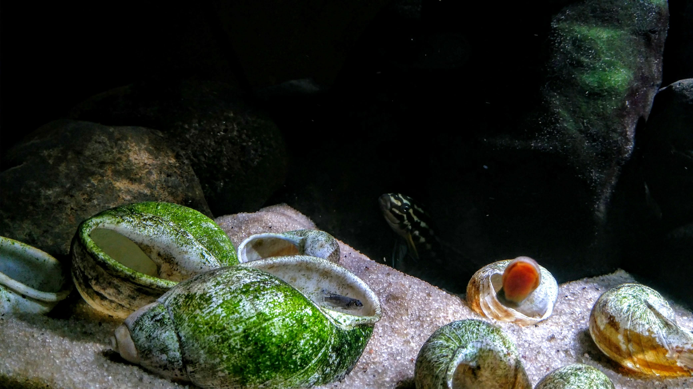
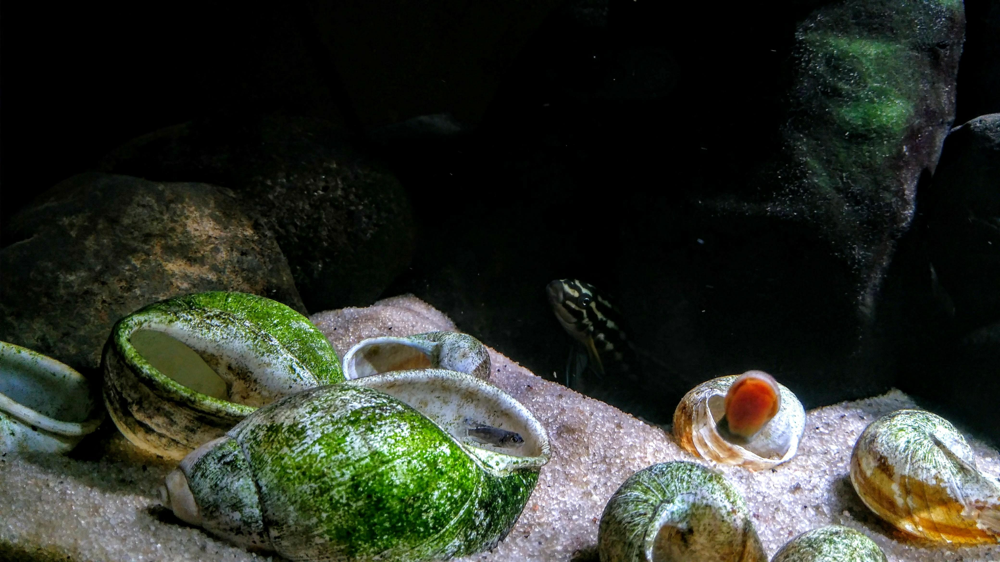
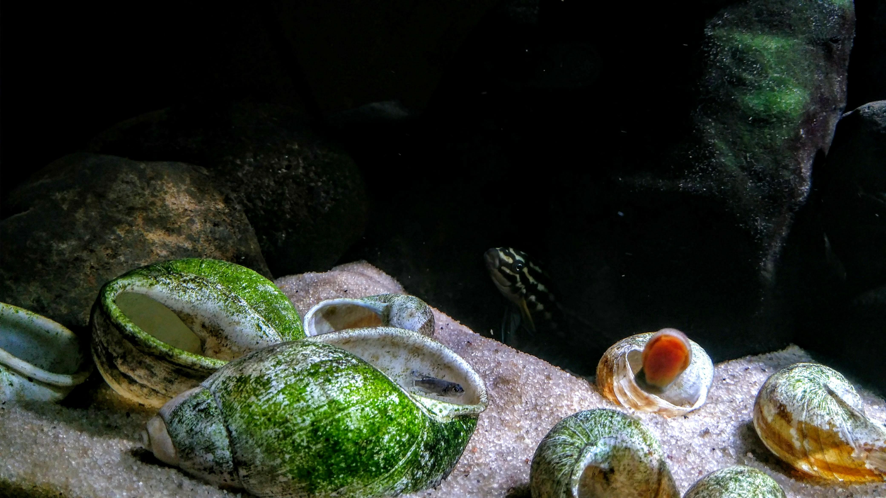
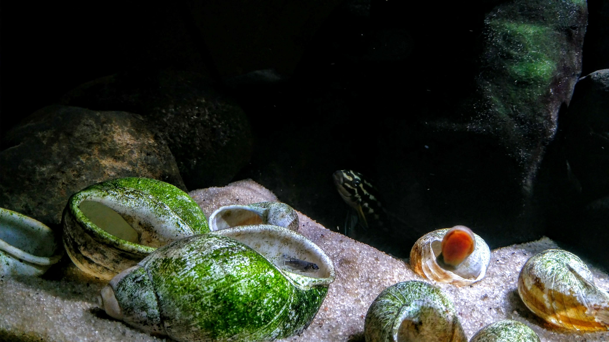

 

Os organismos aquáticos ornamentais são representados em sua grande maioria por peixes e invertebrados de água doce e salgada. Nos últimos anos esses animais ganharam espaço nas casas e inclusive se tornaram pet para algumas pessoas. Atualmente a grande maioria dos peixes de água doce são cultivados em cativeiros e isso é um grande avanço para esse segmento, pois dessa maneira o índice de mortalidade desses animais diminuem, pois ja nascem adaptados ao ambiente de cativeiro. Além disso, existem inúmeros projetos que visam a criação em cativeiro de espécies que correm risco de extinção, o que surge como uma solução para remediar todo o impacto causando pelo homem.